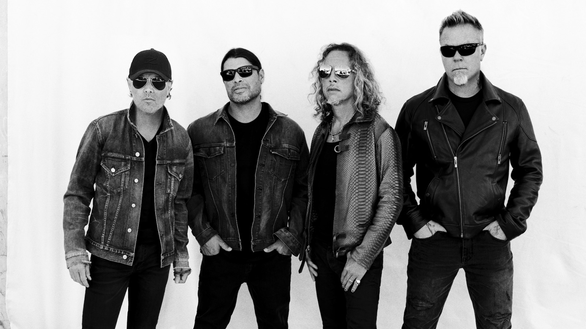
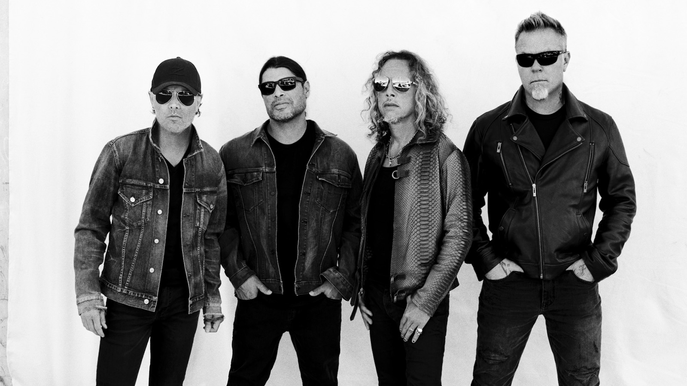

American Big Four Metal Bands
Anthrax
Anthrax was founded in July 1981 by guitarists Scott Ian & Dan Lilker. They discovered the band's name while perusing a biology textbook and claimed it solely for its sufficiently evil-sounding connotation. Soon to join them were vocalist John Connelly, drummer Dave Weiss & bassist Kenny Kushner. Kushner was replaced with Paul Kahn, who was also found insufficient & ultimately galvanized Lilker to take over bass. Greg Walls joined as second guitarist. Connelly & Weiss left & were replaced by Greg D'Angelo on drums, and after a series of vocalists (including Scott's brother Jason Rosenfeld), they found Neil Turbin.
Top 5 songs on Spotify
-
Madhouse
-
Got The Time
-
Bring The Noise
-
Caught In A Mosh
-
Indians
Megadeth
Megadeth was formed in late 1983 when Dave Mustaine (formerly of Metallica) threw a potted plant through the window of David Ellefson's apartment because Ellefson was practicing his bass too loud. When the band was formed, Dijion Carruthers was their drummer and Greg Handevidt their second guitarist. They quickly replaced Carruthers with drummer Lee Rausch, recorded a demo, and secured a few gigs in the San Francisco Bay area in February 1984. After Handevidt was fired for incompetence (he later formed Kublai Khan), they quickly found second guitarist Kerry King (Slayer), who played Megadeth's first three gigs: February 15th, 18th, and 19th of 1984.
Top 5 songs on Spotify
-
Symphony Of Destruction
-
Holy Wars...The Punishment Due
-
A Toud Le Monde
-
Tornado Of Souls
-
Hangar 18
 

Metallica
Metallica was formed by Lars Ulrich and James Hetfield in the fall of 1981. Ulrich (who originally went to the US from Denmark to play tennis) had, during that summer, met Brian Slagel of Metal Blade Records and secured an appearance on an upcoming compilation called Metal Massacre, but had no band. He quickly found Hetfield, who was playing in Leather Charm at the time, and one day in December of 1981, they recorded the rhythm tracks to a remake of a Leather Charm song, "Hit the Lights". Hetfield tracked all guitars and bass on this recording, except for one of the solos, which was performed by guitarist Lloyd Grant in January 1982, and the song appeared on Metal Massacre in February.
Top 5 songs on Spotify
-
Nothing Else Matters
-
Enter Sandman
-
Master Of Puppets
-
The Unforgiven
-
Whiskey In The Jar

Slayer
Slayer was formed in 1981 by Los Angeles schoolmates and guitarists Jeff Hanneman and Kerry King. Tom Araya soon joined on bass and vocals, and drummer Dave Lombardo joined last in 1982. They played in a style reminiscent of early Exodus, influenced heavily by Iron Maiden and Judas Priest, before their attendance at a mid-1982 Metallica concert convinced them to play faster and heavier.
Top 5 songs on Spotify
-
Raining Blood
-
Angel Of Death
-
South Of Heaven
-
Seasons In The Abyss
-
Repentless